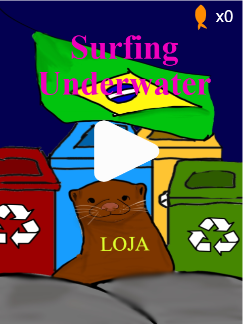
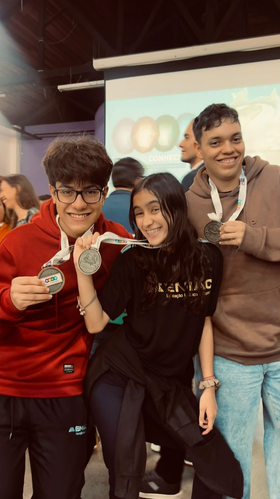

Em 2024, eu e mais dois amigos fizemos um projeto no colégio ENIAC, onde era um jogo sobre uma lontra que tentava escapar da poluição dos Rios Brasileiros, e com esse projeto, nós tivemos a honra de participar na FECEG, onde nosso projeto ganhou em segundo lugar na nossa categoria.

